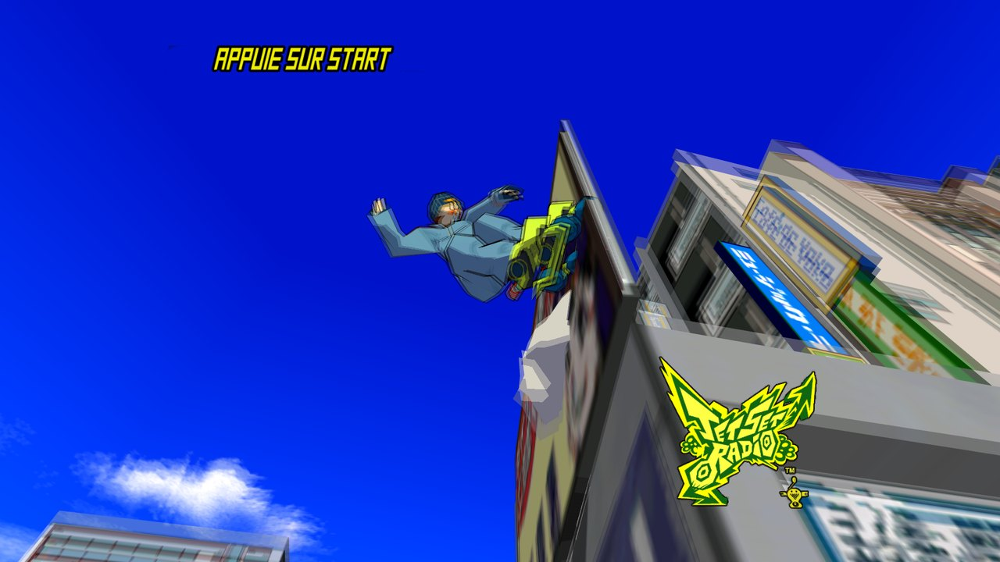
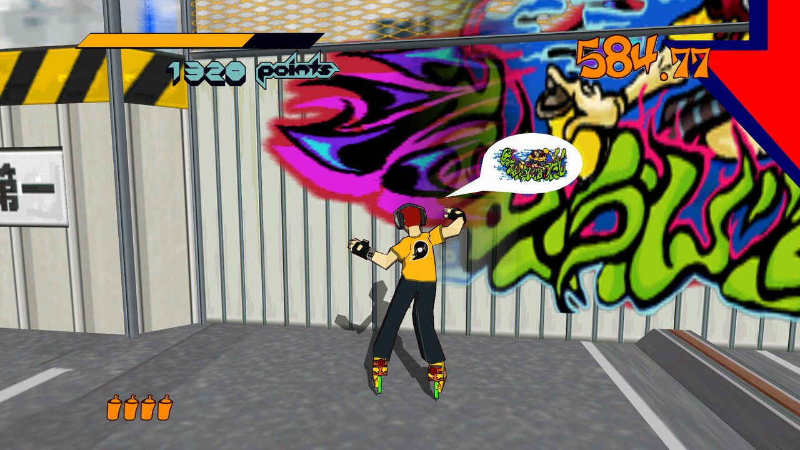
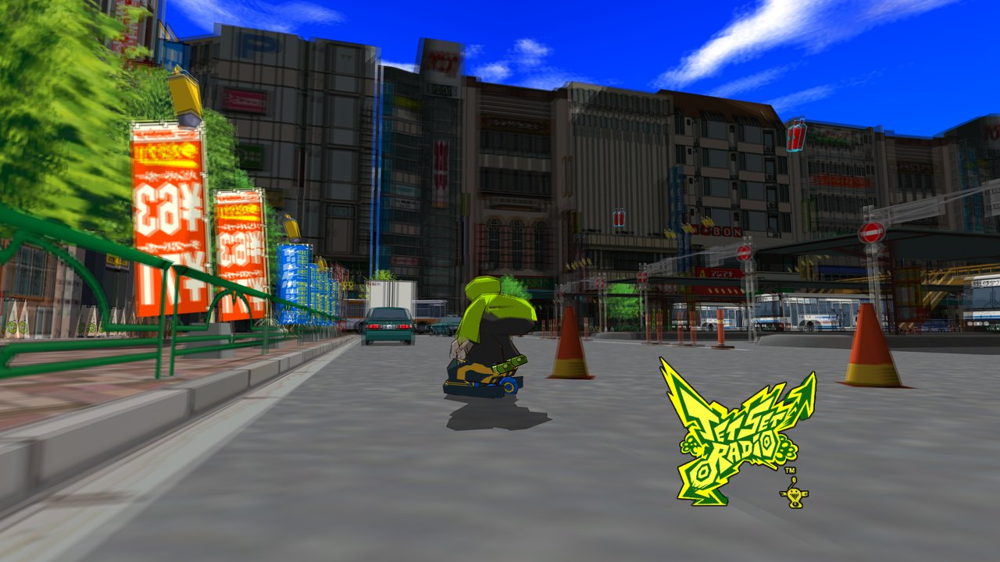

Ce que ça change
60 images par seconde
Le jeu tourne à 30 FPS d'origine. Le patch fait calculer par le moteur une vraie image intermédiaire : persos, voitures et caméra bougent deux fois plus fluidement.
Flou de mouvement
Un flou de caméra sur le décor quand elle tourne, comme au cinéma. Votre perso et les passants restent nets. Réglable en jeu, ou coupé.
Textures nettes
Filtrage anisotrope x16 : les rues et les façades au loin ne scintillent plus quand la caméra bouge.
Ville complète
Plus de bâtiments qui apparaissent d'un coup au loin ou sur les bords de l'écran.
Tags corrigés
Fini le voile blanc qui effaçait une partie des graffitis selon l'angle de la caméra.
Sans risque
Un seul fichier ajouté. Aucun fichier du jeu modifié, sauvegardes intactes, désinstallation en un clic.
En images



Captures du jeu en 1920×1080. Les images fixes ne montrent pas la fluidité : il faut le voir en mouvement !
Installer en 1 minute
- Téléchargez Installer-JSR-60-FPS-v1.0.1.exe sur la page de téléchargement.
- Fermez Jet Set Radio s'il est ouvert, puis lancez l'installeur.
- Il trouve le jeu tout seul dans Steam. Cliquez sur OK.
- Lancez le jeu normalement depuis Steam. C'est prêt !
Vous préférez faire à la main ? Téléchargez le
.zip et copiez d3d9.dll à côté de
jetsetradio.exe (dans Steam : clic droit sur le jeu → Gérer → Parcourir les fichiers locaux).
Les touches
Questions
Est-ce que ça modifie mon jeu ou mes sauvegardes ?
Non. Le patch est un seul fichier, d3d9.dll, que le jeu charge au démarrage. Rien d'autre n'est touché.
Le jeu va-t-il plus vite ?
Non, la vitesse de jeu reste exactement celle d'origine. Seul le nombre d'images affichées double.
Comment le désinstaller ?
Relancez l'installeur et choisissez Non (désinstaller), ou supprimez d3d9.dll du dossier du jeu.
J'ai déjà un autre mod avec une d3d9.dll.
L'installeur le met de côté et le remet en place si vous désinstallez. Les deux ne peuvent pas marcher en même temps.
Le flou me donne mal au cœur.
Appuyez sur F2 pour un flou léger, ou F1 pour le couper complètement. Les 60 FPS restent actifs.
Et sur la version Dreamcast ou une autre version ?
Le patch est fait pour la version Steam du jeu (portage PC de 2012) uniquement.